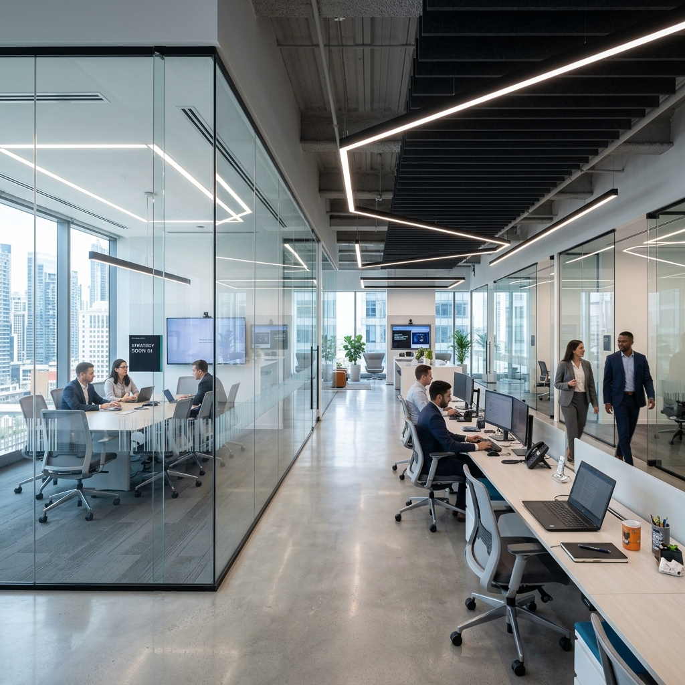

Facilities management and sustainability consultancy, working together under one roof.
We help organisations run efficiently, stay compliant, and operate responsibly, without needing to manage two separate contractors to get there.
Client Satisfaction
Projects Completed
Commercial Clients
(Representational data)

Day to day management of your building, covering maintenance, repairs, compliance checks, and site upkeep. We handle the operational detail so your property stays safe, functional, and presentable, and so your team can stay focused on running the business rather than managing the building.
Enquire NowPractical guidance on reducing environmental impact, from energy efficiency audits to waste reduction strategy and sustainability reporting. We translate environmental regulation and net zero targets into a plan your business can actually carry out, rather than a document that sits unused.
Learn More"Macrolarge took over facilities management for our office and the difference was immediate. Things got fixed before we even noticed they were a problem."
Operations Manager
"We came to Macrolarge for a sustainability audit expecting a report full of jargon. What we got instead was a clear, workable plan, and we've already cut our energy costs because of it."
Managing Director
"Having facilities management and sustainability advice from the same team saved us months of back and forth between two separate contractors."
Facilities Lead
"Macrolarge took over facilities management for our office and the difference was immediate. Things got fixed before we even noticed they were a problem."
Operations Manager
"We came to Macrolarge for a sustainability audit expecting a report full of jargon. What we got instead was a clear, workable plan, and we've already cut our energy costs because of it."
Managing Director
"Having facilities management and sustainability advice from the same team saved us months of back and forth between two separate contractors."
Facilities Lead
Macrolarge Group is based in Huddersfield and provides facilities management and sustainability consultancy across major cities throughout the country.
If your organisation is based in one of these areas and needs support with either service, or both, get in touch for a free consultation. We'll talk through your site, your goals, and what a joined-up plan could look like.